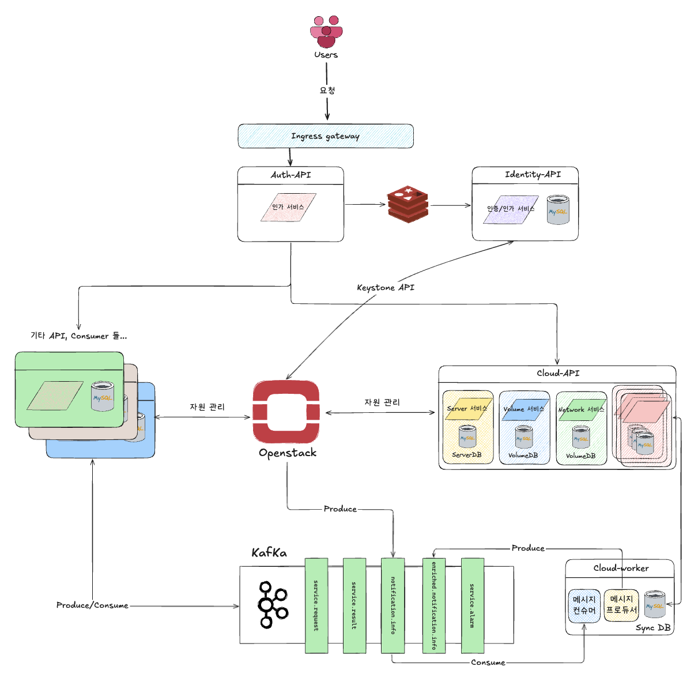

Openstack 기반 클라우드 플랫폼 개발
수행 기간 : 2023.06 ~ 현재
프로젝트 개요

Openstack 기반의 클라우드 플랫폼을 만들기 위한 백엔드 시스템 개발 프로젝트 입니다.
가상 Network(VPC) API
Volume(Block Storage) API
SSHkey API
Peering Gateway API
NAS API
FileBackup API
위와 같은 클라우드를 사용하기 위한 기본 자원을 제공하는 API 서버를 개발하고 있습니다.

개발 환경
Language :
Python 3.11Framework :
FastAPIORM :
Sqlalchemy,AlembicCloud Infra :
OpenstackDB :
MySql,RedisMQ :
KafkaDeploy :
Docker,k8s,Gitlab CI/CD
아키텍처

MSA기반의 아키텍처로 서비스를 분리하여 개발인증/인가 서비스, 클라우드 자원 관리 서비스, 클라우드 자원 모니터링 서비스로 구성
Kafka를 사용해 비동기적으로 서비스 간 자원 상태 동기화 처리

역할 및 기여
주요 업무
FastAPI를 활용한 프로젝트 구품 설계/구현클라우드 도메인의 상품 분석 및 API 설계
클라우드 자원과 관련된 DB 스키마 설계
아키텍처 개선
주요 개선 사항
- Sqlalchemy 버전 업그레이드 (1.4 -> 2.0)
프로젝트에 적용된 SqlAlchemy 버전을 업그레이드 하는 작업을 수행
1.4 버전은 레거시 버전으로 지정되어 사후지원이 불투명
마이그레이션으로 얻을 수 있는 기술적 이점을 고려(typing, 쿼리 성능 개선 등)
- alembic 도입을 통한 DB 버전 관리
기존 프로젝트들은 개발자의 로컬 환경, 배포 환경(개발, QA, Production) 간 DB를 수동으로 DML을 실행해 관리
또한 QA, Product 환경은 dbsafer로 팀장 결재 이후 DML 쿼리를 실행해야 하는 프로세스가 존재
alembic을 도입, 배포 후 애플리케이션 실행 시점에 자동으로 최신 버전의 DB로 업그레이드할 수 있게 개선
- Async-Blocking 구조 개선
기존 프로젝트에는 경로 함수를 async def로 작성해 비동기 처리하도록 설계
async 함수에 DB 쿼리를 동기적으로 수행하는 코드가 있어 경우 async-blocking 현상 발생
해당 코드를 sqlalchemy 의 비동기 세션을 사용하는 방식으로 변경하는 리팩토링 진행
- 단위테스트, 테스트 프레임워크를 적용해 테스트 코드 생산성 향상
DB를 사용하는 통합 테스트를 성공/실패 모든 테스트 케이스에 사용되는 상황
mocking, fixture를 코드로 인해 테스트 작성이 힘들어짐
테스트 데이터를 fixture를 통해 객체로 만들고 db에 저장하는 테스트 프레임워크 제작
테스트를 종류별로 지정해 통합 테스트를 최소화 하고 단위 테스트로 책임 분리
- 애플리케이션 아키택처 개선
유지보수성과 높은 응집력, 낮은 결합력을 유지하는 소프트웨어를 만들기 위한 작업을 진행
FastAPI 기반 어플리케이션에 클린 아키텍처(Controller, Service, Repository) 도입
dependency injector 라이브러리를 사용하여 의존성을 외부에서 주입 가능한 형태로 변경
작업 단위 패턴(UoW)을 적용해 서비스 레이어에서 DB작업에 대한 원자성을 유지할 수 있게 변경
공통 기능을 uility 패키지로 만들어 라이브러리를 팀 내에서 공유해서 사용할 수 있게 변경